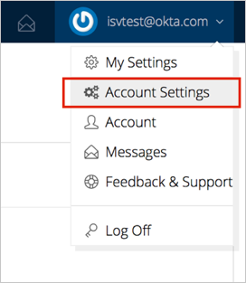
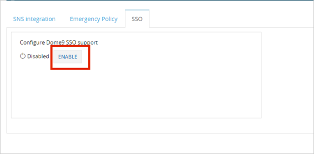
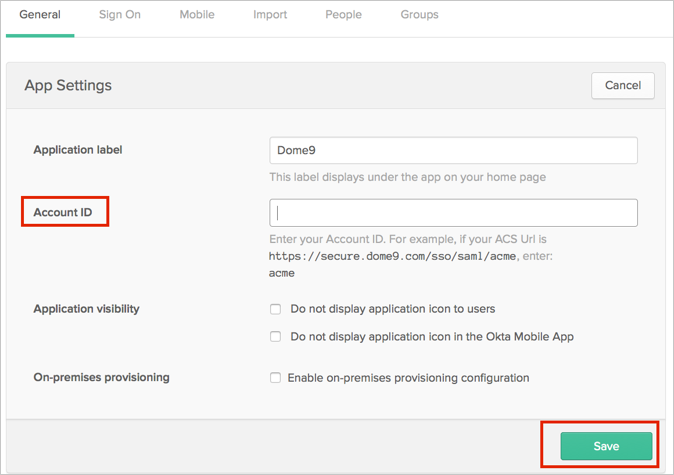

Login to Dome9 Central with a super user account. Make sure that the user is set to be a SSO user.
Note: Refer to https://dome9-security.atlassian.net/wiki/display/DG/Single+Sign+On if you need to create a new SSO user.
Select Account Settings from the drop down menu under the User’s name:

Select the SSO tab, then in the SSO Settings click Enable:

The SSO Configuration page opens, enter the following information (see screen shot at end of step for reference):
Account ID: Enter a custom defined string to create your Account ID; for example your company name.
IDP Issuer/Entity ID: Copy and paste the following:
Sign into the Okta Admin Dashboard to generate this variable.
Login URL/SignOn URL: Copy and paste the following:
Sign into the Okta Admin Dashboard to generate this variable.
X.509 Certificate: Copy and paste the following certificate in PEM Text format:
Sign into the Okta Admin Dashboard to generate this variable.
Click Save.

In Okta, select the General tab for the Dome9 app, then click Edit.
Enter the Account ID you used in step 4, above.
Click Save.

Done!
Notes:
SP-initiated flows and IdP-initiated flows are supported.
Just in Time (JIT) provisioning is not supported.